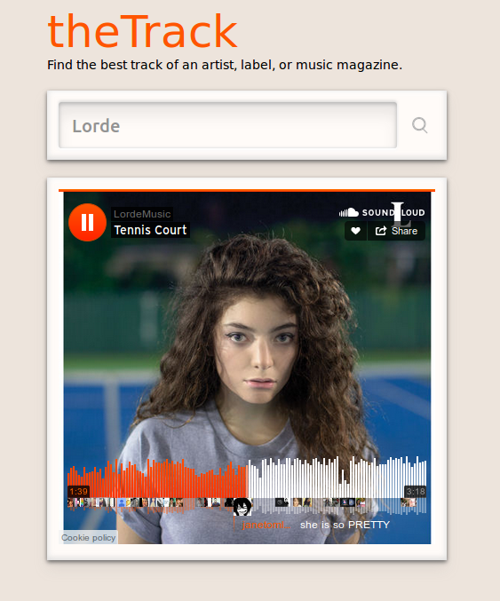

theTrack, helps you find the one.
Sat 05 September 2015
Last weekend I started working on theTrack, a very fun project which involved Flask, Python and music, a wonderful combination in its own right.
Basically, theTrack is a web app that given the artist name, will try to find their "best" track. It uses Soundcloud data such as number of plays, comments and favorites to calculate a rank for each track.
I came up with the following formula to calculate a rank:
rank = (number_of_favorites / total_plays) + ((number_of_comments * 2) / total_plays)
So far, I've seen good results, and it has helped me find great tracks when discovering new and unknown artists. Though, it is important to note that in order for the result to make sense, the artist should have a Soundcloud channel.
Running Demo: thetrack.pythonanywhere.com
Source Code: Github
